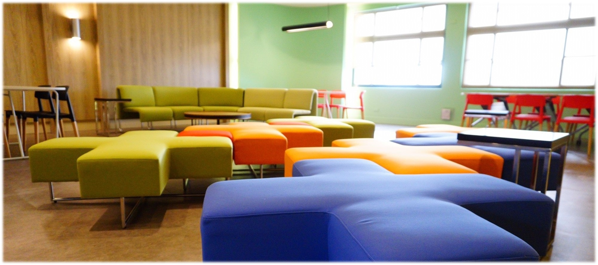
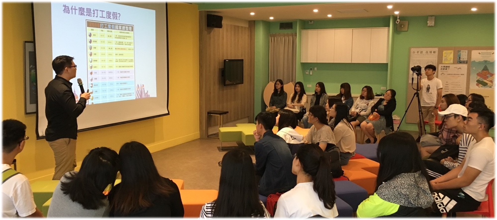
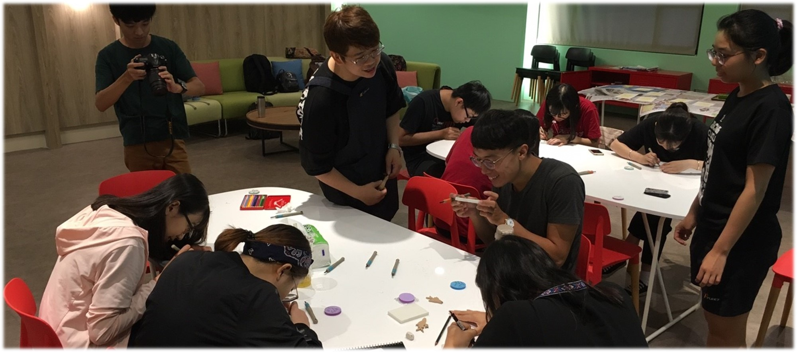

「日日新」共學區的空間設計富有創意與活力，環境明亮舒適，將提供學生舉辦同儕精進讀書會、自主互學工作坊、同儕分享及小型講座等活動之學生自主學習發展基地。 「日日新共學區」由圖書館館長李宜涯命名，引用商湯之「盤銘」曰：「茍日新，日日新，又日新」中的日日新，詩經也說，「周雖舊邦，其命維新。」古聖先賢已然知道維護傳統固然重要，但欠缺創新的想法與行動，將無法抵擋時代潮流而慘遭淘汰，因此誡勉世人要革故鼎新、日新又新，才能因應時代潮流而屹立不搖。
04/15 『日日新輕演講｜在逆境中尋找出路』 #自我成長
05/06 『日日新教與學工作坊｜【電腦文書處理】學習工作坊 Word 應用及排版』
05/13 『日日新教與學工作坊｜【電腦文書處理】學習工作坊 PowerPoint 美編及設計』
05/20 『日日新輕演講｜如果，給你一個嶄新的身分…』#赴法交換 #心態調整 #國際交流實戰小技巧